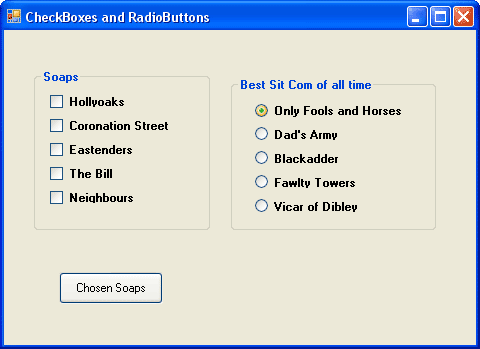
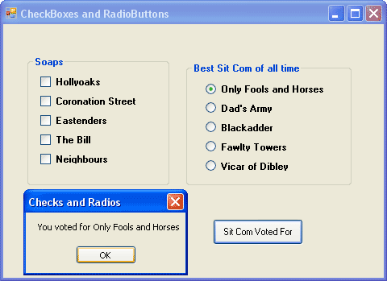

Add Option Buttons to a VB .NET form
Radio Buttons, sometimes called Option Buttons, are used when you want to restrict a user's choice to one, Male/Female, for example. A Checkbox would be no good here, because a user could tick both boxes. You want to force your users to pick only one from your list of options.
Adding Radio Buttons to a Form is exactly the same process as adding a Checkbox. Again, we'll add some Radio Buttons to a Group Box, and write code to extract what the user has chosen.
- Add a Group Box to your Form.
- Set the Text Property of the Group Box to "Best Sit Com of all time"
- Set the Font options to anything you like
- Place five Radio Buttons into your Group Box (By default, they'll be called "Option1", "Option2", "Option3", etc
- Set the Text Property of the Five Radio Buttons to Only Fools and Horses, Dad's Army, Blackadder, Fawlty Towers, Vicar of Dibley
- Your Form should now look something like this:

Run your programme and test to see if you can indeed only select one item from the list.
The reason you can only select one is that all the radio buttons are placed in the same group box. You can place another set of radio buttons in a second group box, and these would work independently of the set of radio buttons in the first group box.
To test which Sit Com was chosen, you can use an If … Elseif Statement. You can do this because only one of the radio buttons will be True if selected: all the others will then have a value of False.
So place a Button on your form. Set the Text property to something appropriate. Then double click your new button to open up the code window. Type the following code (Notice that the Property is now Checked, and not CheckState):
Dim ChosenSitCom As String
If RadioButton1.Checked = True Then
ChosenSitCom = RadioButton1.Text
ElseIf RadioButton2.Checked = True Then
ChosenSitCom = RadioButton2.Text
ElseIf RadioButton3.Checked = True Then
ChosenSitCom = RadioButton3.Text
ElseIf RadioButton4.Checked = True Then
ChosenSitCom = RadioButton4.Text
ElseIf RadioButton5.Checked = True Then
ChosenSitCom = RadioButton5.Text
End If
MsgBox("You voted for " & ChosenSitCom)
By using If … ElseIf we can check which radio button a user selected. The Text property from the chosen radio button is then placed in a String variable called ChosenSitCom. At the end, we then display the selected radio button in a message box.
Run your programme and test it out. Select a Sit Com, and then click your Button. You should see the item you selected displayed:

Exercise
Add a Textbox to your Form. Write code to transfer a chosen Sit Com to the Textbox when the button is clicked. Add a label next to the Textbox with the Caption "You Voted For. . . "
And that's all there is to adding Option Buttons to your VB .NET forms. In the next section of the course, we'll take a look at error checking.